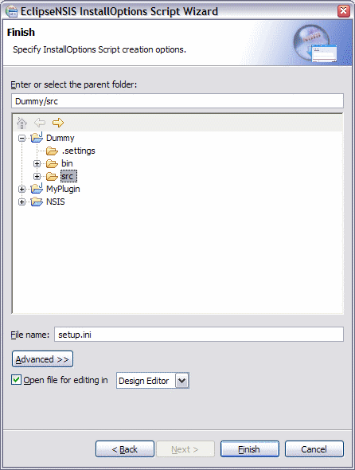

InstallOptions Script Wizard
The InstallOptions script wizard helps create a new InstallOptions script. The resulting script file is saved in the Eclipse Workspace and can be automatically opened using either the Design Editor or the Source Editor if desired. The Advanced button can be used to link the script to a pre-existing file in the filesystem (see the New File Wizard documentation for more details). For further information on InstallOptions scripts, please consult the InstallOptions Readme.
The script wizard can be accessed by using the Eclipse Workbench New button or menu and selecting the Other... item. It consists of a Welcome page and a Finish page.
Welcome
The Welcome page provides an introduction to the Script Wizard. It also affords an opportunity to select a template for creating the script. Templates are managed using the Palette & Templates Settings dialog.

- Create script from template
- Option to create the script using a template. Templates are managed using the Palette & Templates Settings dialog. ← Back
- Available Script Templates
- A list of templates which have been enabled for use. ← Back
- Description
- Description of the selected template. ← Back
Finish
The Finish page completes the process of creating an InstallOptions script. It also provides an option to open the generated script in either of the InstallOptions editors.

- Parent Folder and File Name
- Select the parent folder and name for the generated file. ← Back
- Advanced
- Specify advanced options, e.g., linking to an external filesystem file. ← Back
- Open for Editing
- Optionally open the generated file in either one of the InstallOptions editors. ← Back
Previous | Contents | Next
Copyright © 2004, 2005 Sunil Kamath (IcemanK).